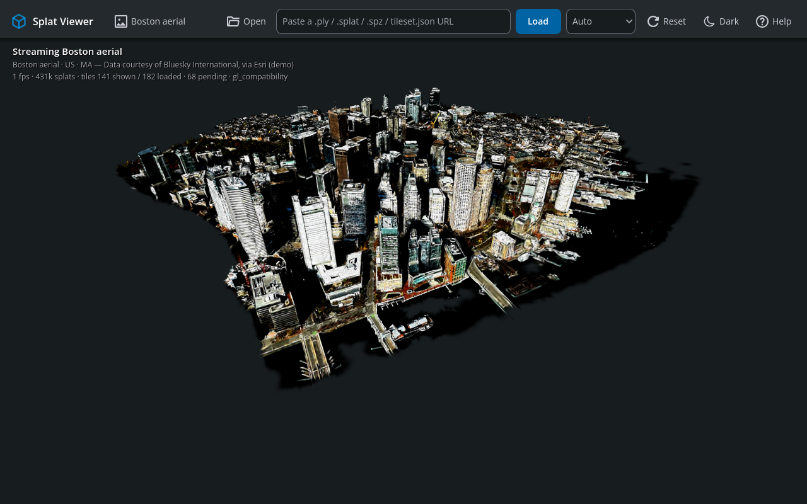
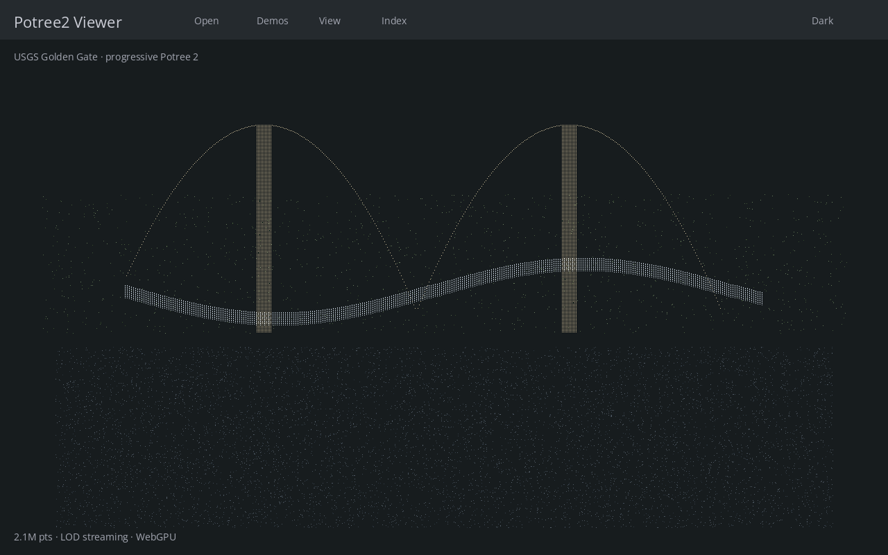
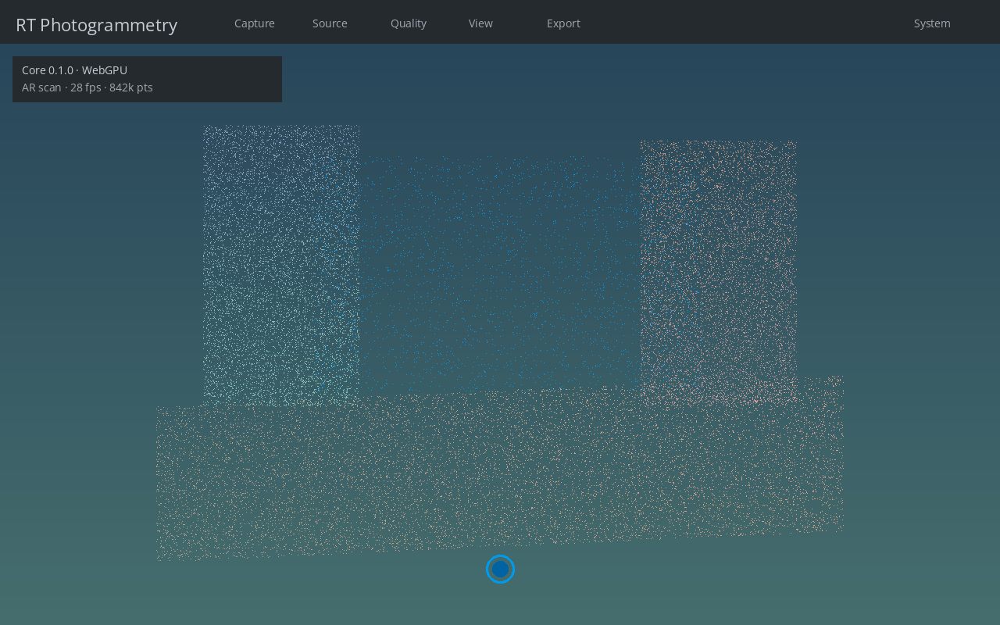
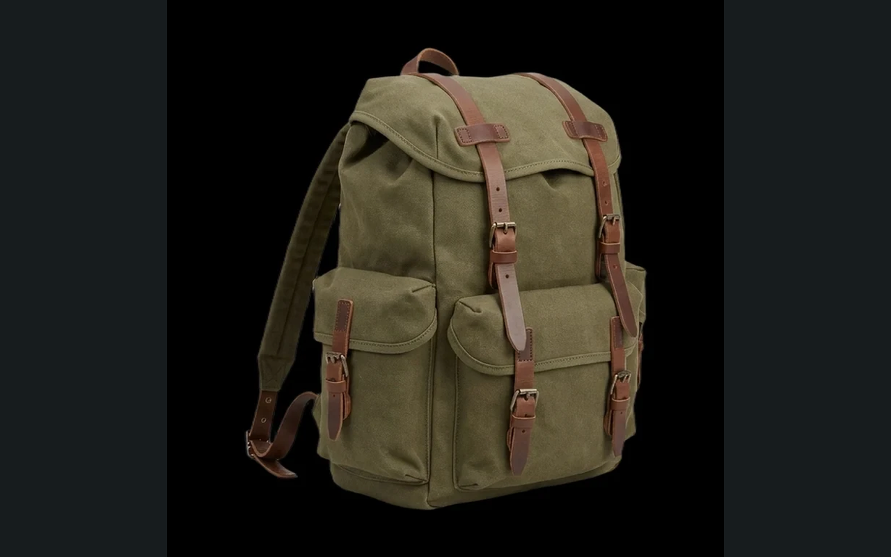

Capture, stream and explore reality
Early previews from Newborg Spatial Labs: Gaussian splat viewing, Potree 2 point clouds, real-time photogrammetry, and one-photo-to-splat generation. All built with permissively licensed open source.


